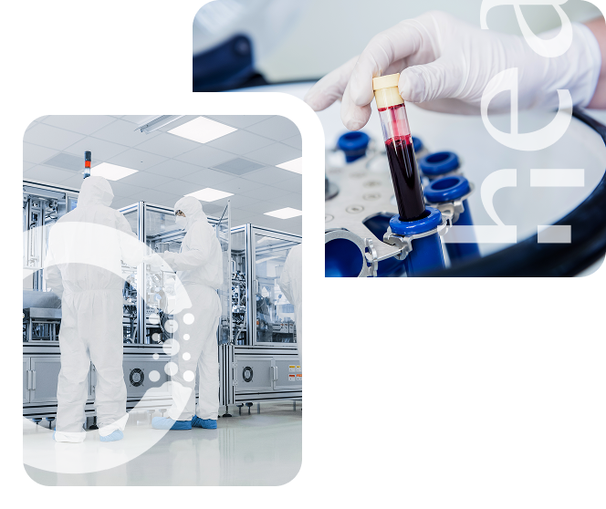
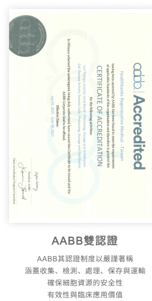
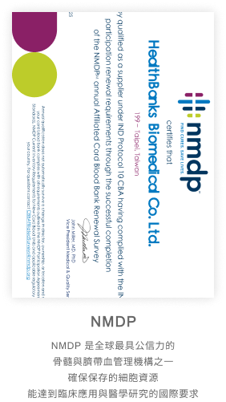
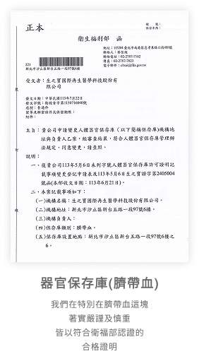
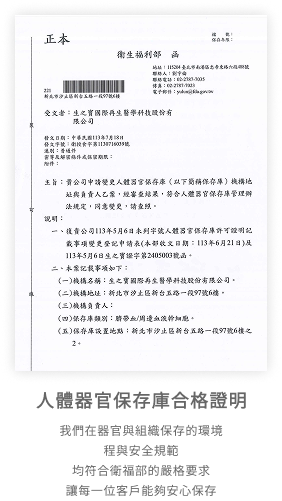

生之寶"團隊"深耕於生命科學與再生醫學已經超過 20 年。
從臍帶&臍帶血儲存開始，
我們奠定了對於幹細胞的多項專業技術，
並不斷在研發與應用上持續突破，造福人群。
近年來我們更將研究成果延伸至外泌體領域，
將原本屬於醫學前沿的科研技術，
轉化成能夠改善生活品質的日常保養和美妝用品。
我們的品牌理念是「儲存希望、研究創新、治療實踐」。
這不僅是一句口號，
而是我們在每一個服務與產品中落實的核心信念。
我們相信：「儲存不是終點，而是開始」。
生之寶理念 Vision
VISION

生之寶項目 Product
生之寶以再生醫學為核心，
提供從新生命起點到日常保養的多元服務。
我們的團隊擁有 20 年以上專業經驗，
且通過GTP實地訪查合格及AABB雙認證的實驗室製造，
確保每一個服務都安全、可靠並值得信賴。
無論是想保存最珍貴的細胞資源，
或是探索外泌體的應用，
我們都能提供完整且專業的方案，
陪伴您與家人走過每一個重要時刻。
提供從新生命起點到日常保養的多元服務。
我們的團隊擁有 20 年以上專業經驗，
且通過GTP實地訪查合格及AABB雙認證的實驗室製造，
確保每一個服務都安全、可靠並值得信賴。
無論是想保存最珍貴的細胞資源，
或是探索外泌體的應用，
我們都能提供完整且專業的方案，
陪伴您與家人走過每一個重要時刻。
外泌體 EXOSOME
醫學美容的新寵兒，
傳統醫美多以物理性或化學性干預
(比如玻尿酸填充、肉毒注射等)，
多在處理表層問題，
對肌膚的抗衰老並無幫助。
近年來外泌體成為全球醫學奈米級的科研新星，
外泌體透過生長因子、RNA、
蛋白質等活性分子傳遞信息，
從細胞層級啟動自我修復與再生，
促進膠原蛋白、彈力蛋白生成，
從內而外改善肌底健康，
讓您美得更自然，更自信!
傳統醫美多以物理性或化學性干預
(比如玻尿酸填充、肉毒注射等)，
多在處理表層問題，
對肌膚的抗衰老並無幫助。
近年來外泌體成為全球醫學奈米級的科研新星，
外泌體透過生長因子、RNA、
蛋白質等活性分子傳遞信息，
從細胞層級啟動自我修復與再生，
促進膠原蛋白、彈力蛋白生成，
從內而外改善肌底健康，
讓您美得更自然，更自信!
EXOSOME


國際認證 CERTIFICATION
生之寶實驗室是通過TFDA認可的專業細胞保存庫，
並通過GTP實地訪查合格及AABB雙認證的實驗室。
以最高規格的儲存技術，
提供您最頂尖的細胞儲存方案。
我們嚴格執行品質管理，
從收集、分離、檢測到冷凍保存，
並導入專利-196度C保存技術及智能品質管理系統，
確保細胞活性能達到99%以上。
並通過GTP實地訪查合格及AABB雙認證的實驗室。
以最高規格的儲存技術，
提供您最頂尖的細胞儲存方案。
我們嚴格執行品質管理，
從收集、分離、檢測到冷凍保存，
並導入專利-196度C保存技術及智能品質管理系統，
確保細胞活性能達到99%以上。
CERTIFICATION







國際血庫 BLOOD BANKS
生之寶為美國國家骨髓捐贈計畫(NMDP)會員，
並加入美國FDA核准之新藥臨床實驗(IND)，
臍帶血可以在美境內直接使用。
生之寶持續上傳臍帶血資料，
挑戰NMDP全球第一大亞裔血庫。
除NMDP外，
生之寶同時是世界骨髓
捐贈者協會(WMDA)成員，
WMDA提供世界最大
造血細胞數據庫的搜尋與配對服務。
生之寶獲全球多國公庫的國際認可，
只為提供存戶與家人最好的全球化移植與服務。
並加入美國FDA核准之新藥臨床實驗(IND)，
臍帶血可以在美境內直接使用。
生之寶持續上傳臍帶血資料，
挑戰NMDP全球第一大亞裔血庫。
除NMDP外，
生之寶同時是世界骨髓
捐贈者協會(WMDA)成員，
WMDA提供世界最大
造血細胞數據庫的搜尋與配對服務。
生之寶獲全球多國公庫的國際認可，
只為提供存戶與家人最好的全球化移植與服務。
BLOOD BANKS